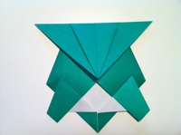
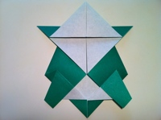

Step 1: Start with a square piece of origami paper with color side up.

Step 2: Fold the paper in half, then unfold.
Step 3: Fold the corners to the center crease.

Step 4: Turn the paper over.

Step 5: Fold the slants to meet at the center and allow the flaps in back to come loose.

Step 6: Fold the bottom flaps to the center as shown.
Step 7: Fold about 2/3rds of the flap back down as shown.

Step 8: Fold the "diamond" down in half.
Step 9: Fold about 3/4ths of it back up.
Step 10: Here's the tricky fold. Begin creasing at the left corner tip and slide the crease to the center, then squash parts of the head.

Step 11: Repeat on the right side.

Step 12: Turn the figure over.

Step 13: Squeeze the sides of the tail together to create a hump on the shell. Make sure peak of the hump does not go past half way. After squeezing the tail, fold it to the side.
Step 14: Fold the tail under the body.
Step 15: Fold the corners on both sides in to give the shell a rounded appearance.

Step 16: Fold only parts of the tail back out, allowing the base to lock the shape of the shell in place while the tips protrudes out.

Step 17: Turn over.

Step 18: Fold the arms in and then fold the tip back out to the center of the shoulders' edge.

Step 19: Fold the legs in and half of it back out to the edge.
Step 20: Turn the turtle over and stretch the arms and legs out a little so it can stand. Good job!